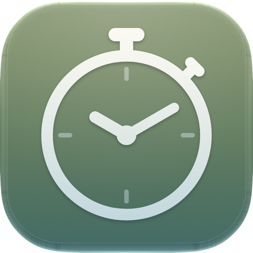

Uair
Time tracker and timesheet for your Mac
Start a timer, file it under a project, and export a clean timesheet as CSV or Excel when you need one. Your data stays on your Mac: no account, no cloud, no tracking.
- macOS 13 or later
- Free to try for 14 days
- One-time unlock, no subscription
- English, Deutsch, Français
Timers, projects and rates
Start a timer with one click or ⌘N. File it under a project and a process, with their own numbers and hourly rates.
List and calendar
See your time day by day, or as a calendar. Correct any session, and undo with ⌘Z.
Menu bar and mini timer
The running time sits in the menu bar, or in a small mini timer that stays above your other windows.
Search
Press ⌘K to find any project, process or timer by name or number, and start it with Return.
Import and export
Bring in your project list from Excel or CSV. Export a timesheet with rates, amounts and rounding if you want it.
Private by design
Everything stays on your Mac. Uair has no account, no analytics and no network access at all.